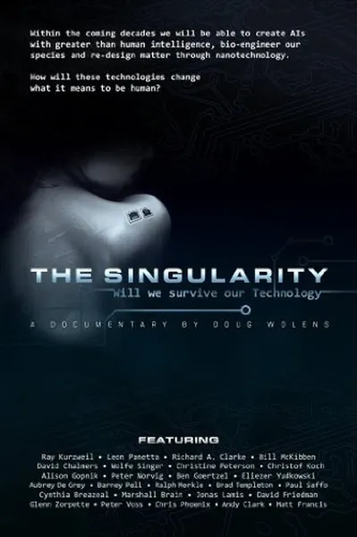

Документальный · 2012 · Документальный
Документальный фильм о технологической сингулярности — гипотетическом моменте, когда искусственный интеллект превзойдет человеческий разум и начнет совершенствовать сам себя. Рэй Курцвейл объясняет, почему считает, что до этого события остались считанные десятилетия, а скептики доказывают, что это лишь наукообразная фантастика. Фильм дает слово обеим сторонам, избегая монтажных уловок, — редкий формат для темы, в которой обычно побеждает тот, кто громче всех заявляет о своей позиции.
A documentary about the technological singularity — the hypothetical moment when AI surpasses human intellect and begins improving itself. Ray Kurzweil explains why he believes it is a matter of decades; skeptics explain why it is math-flavored fiction. The film lets both sides speak without editing traps — a rare format for a topic usually won by the loudest claim.